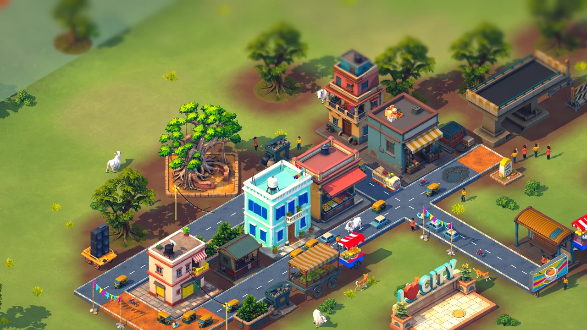
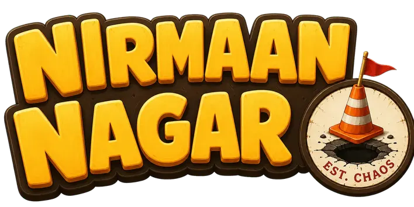

An Indian city-builder game
A little city,
a glorious mess.
Beta open on Android and iPhone
118 props
Build the mess you want
Roads, homes and shops first, then the good stuff. Nothing has to be fixed. Six of them:
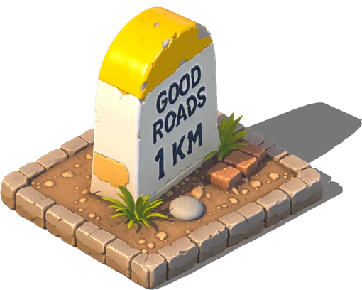
Hopeful Milestone
Good roads: always one kilometre away. A small promise for a patch of ground.
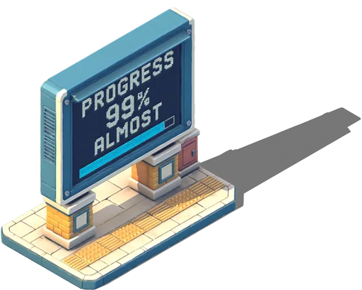
Civic Display
Progress has reached almost. Again.
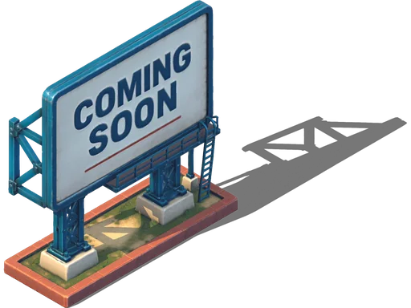
Skyline Hoarding
Phase 2 sanctioned. Phase 1 to be announced. Large enough to fill the skyline.
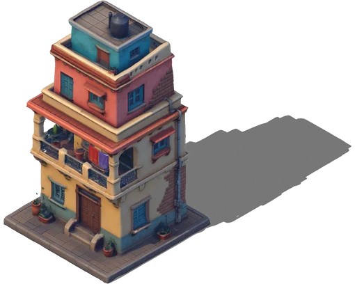
Bonus-Floor House
Room for one more floor. There is always room for one more floor.
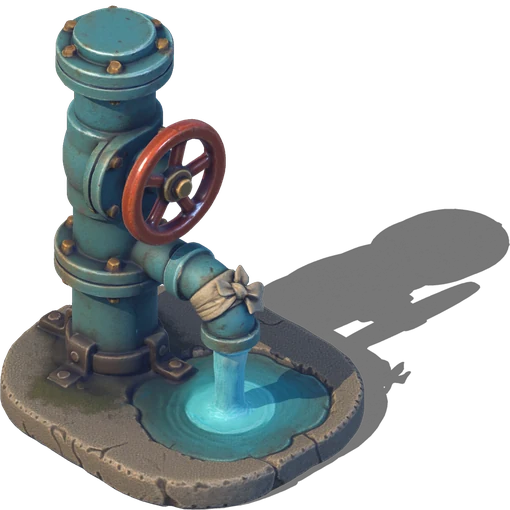
Surprise Fountain
An unplanned water feature. No tickets. Just a small, persistent puddle.
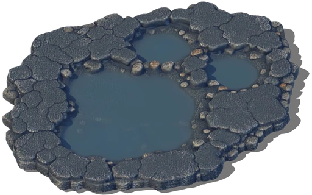
Heritage Pothole
A little dip with a long local history. Every vehicle wobbles; nobody is surprised.
Tap a lineThe street
The street talks back
Every line and every voice is the game’s own. Nothing plays until you tap.
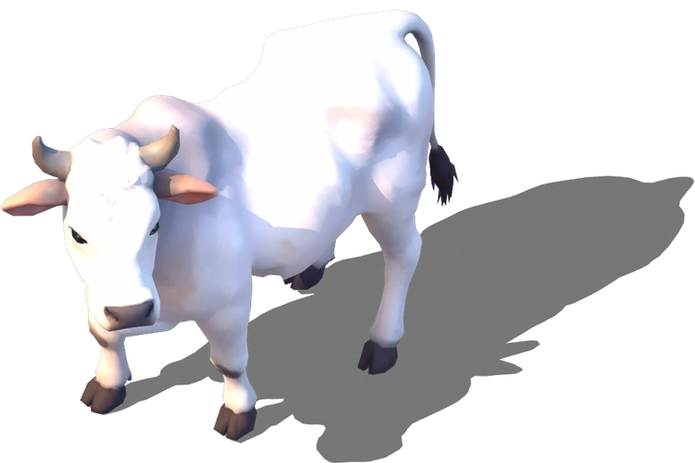
- Hat, hat, hurr!Move, move! Shoo, cow!
- Ye talaab kab bana?Since when is there a pond here?
- Sadak mein gaddhe hain, ya gaddhon mein sadak hai?Potholes in the road, or road in the potholes?
- Wah! Aaj toh chamatkaar!Wow! A miracle today!
- Fufa ji naraz ho gaye!The uncle is sulking again!
7 events
Then the town gets visitors
Answer one with the right prop for a bonus, or just watch. Nothing is lost if you let it pass.
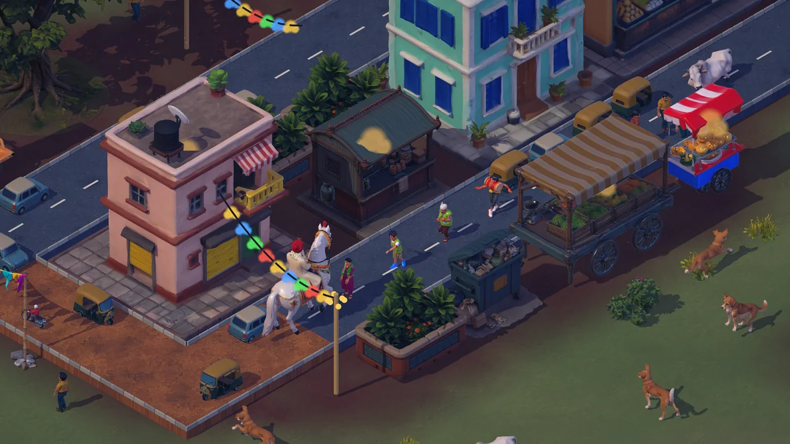
Wedding baraat, from level 9
The baraat dances down the road at dusk, under the light strings.
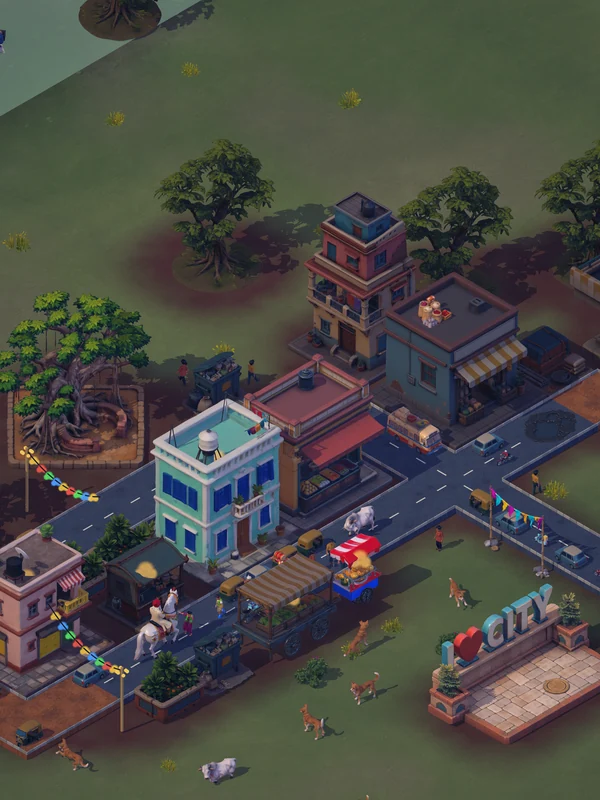
The same evening
The whole bazaar at the wedding’s dusk.
Monsoon from level 8
Rain over every road. The potholes fill and the traffic crawls.
Wedding baraat from level 9
The baraat dances down the road at dusk, under the light strings.
Fogging drive from level 10
A municipal worker walks the fogging machine down the roads, a white cloud behind.
VIP convoy from level 11
Barricades go up, the traffic crawls, and the convoy takes ten seconds.
Inspection visit from level 12
Sixty seconds to hide the town's chaos behind barricades.
Kite season from level 13
The sky fills with kites, and one always ends up in the wires.
Election season from level 14
Hoardings sprout overnight. Every candidate is fictional.
Two Missions with friends from level 3
Clean the nala or dig the trench again, with three bots or up to three friends online.
Online play is for players 18 and over.
8 meme formats
The wall of towns
Photo mode turns a corner of your town into a meme with its name on it. These are from our own test town, Gol Chowk. Yours goes next.
Your town here
Join the beta, build your mess, open photo mode: the game puts your town’s name on it.
Join the beta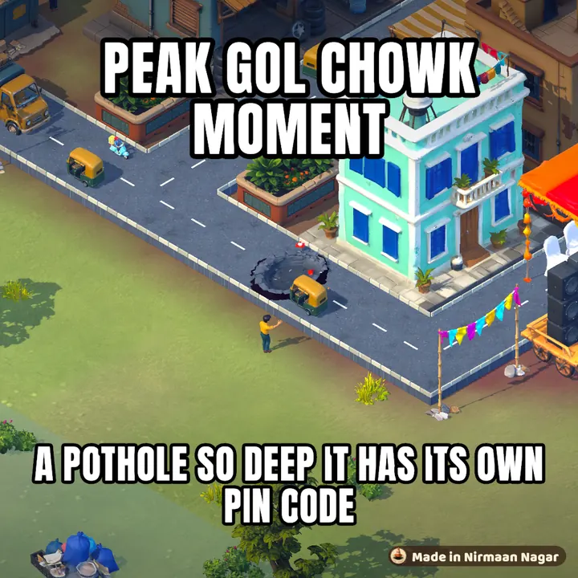
Peak 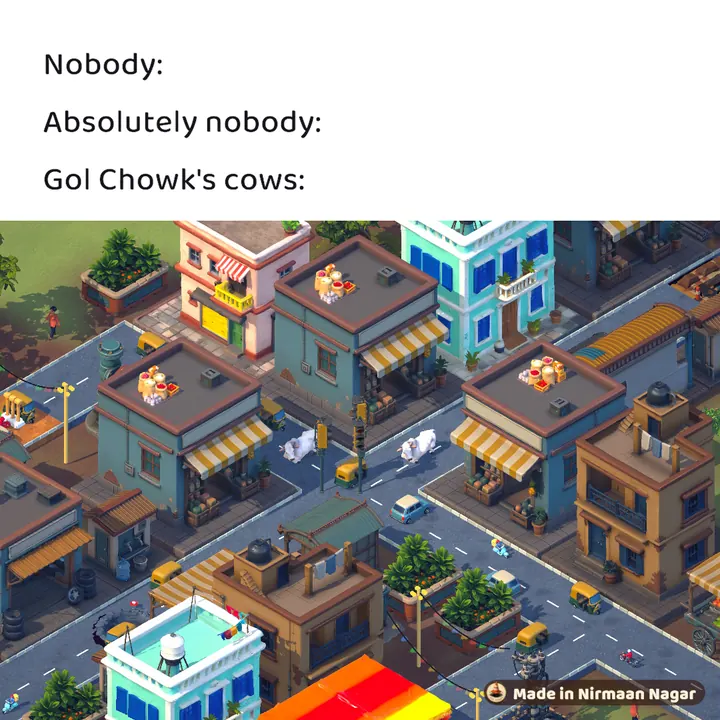
Nobody 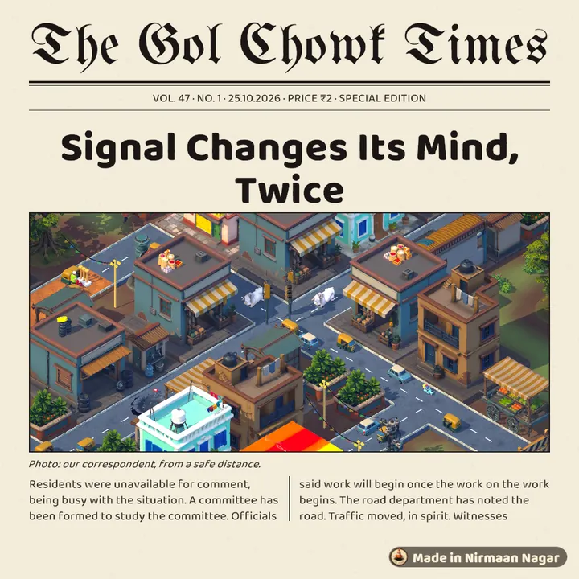
Times 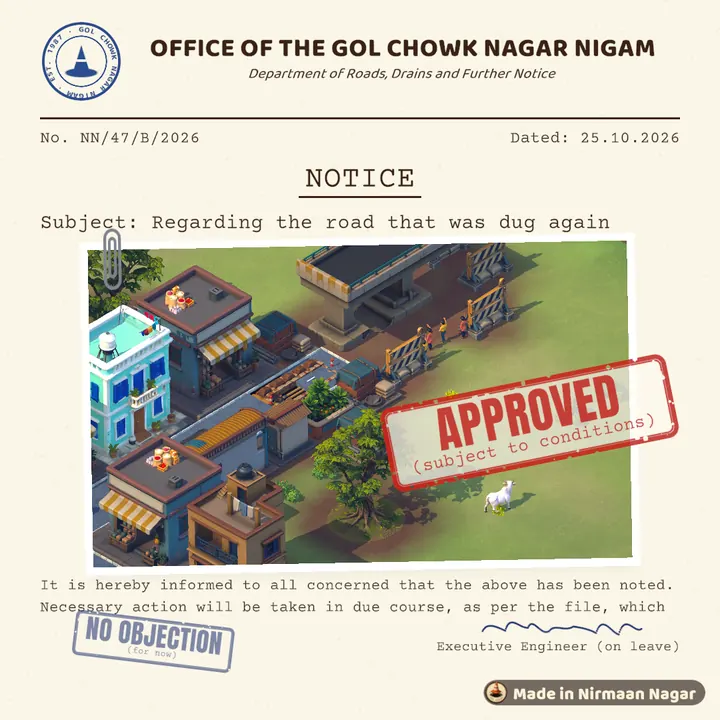
Notice 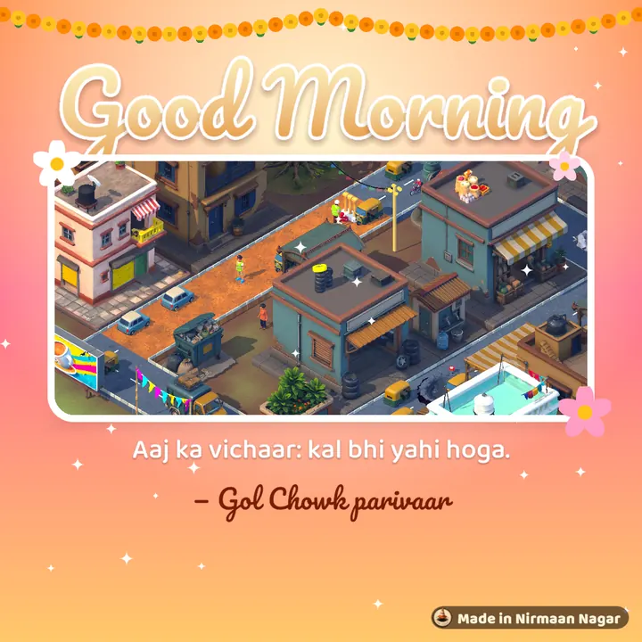
Morning 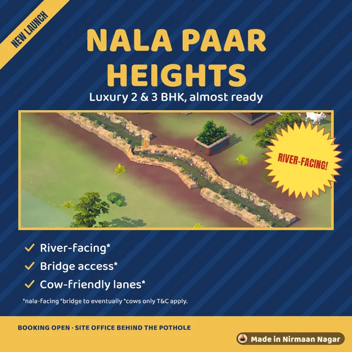
Property 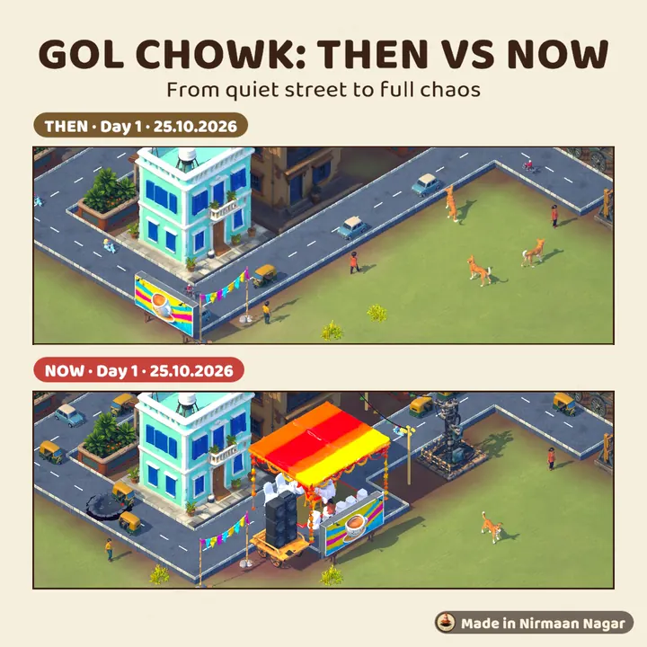
Then vs Now 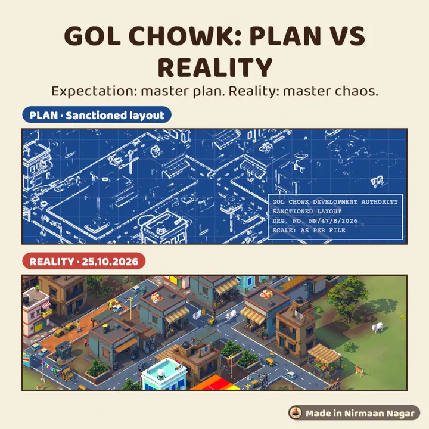
Plan vs Reality
Made one? Post it tagging @nirmaannagar, and we will ask you before we put it on this wall.
Live 3D · 3.7 MB
Poke the town
The game’s own models, drawn live in your browser. Wake it up, then tap the pothole, the cow, an auto or the signal.
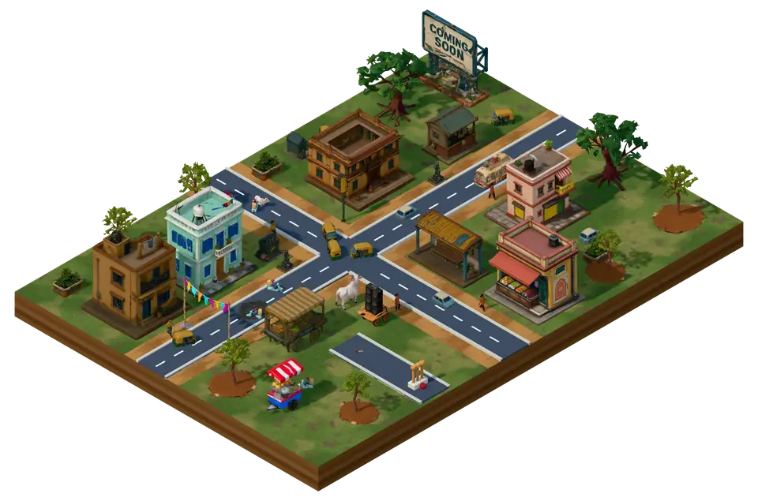
About 3.7 MB, only when you ask. No sound until you tap.The live town needs JavaScript; here is its picture.
Beta open
Build your own mess first
Play it before launch and tell us what breaks. No ads, and you can play without sending us anything.
Android
With the same Google account, on your Android phone, then install Nirmaan Nagar from Google Play.
iPhone and iPad
Apple’s free test app installs the game.
Testers can leave any time. What the sign-up shares with us is on the privacy page.
Not testing? Get a message at launch
The button writes us one email; we use your address only to send you one message when the game is out.